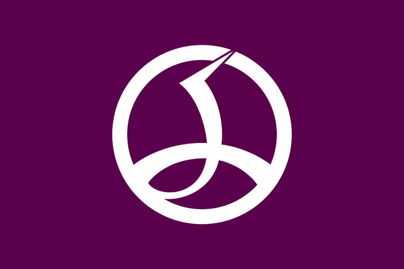

General
Welcome to electric town!
A brief summary
The name Akihabara is a shortening of Akibagahara (秋葉が原, "autumn leaf field"), which ultimately comes from Akiba (秋葉), named after a fire-controlling deity of a firefighting shrine built after the area was destroyed by a fire in 1869. Post WWIII the town earned itself the name of Denki Gai (Electric Town) as it exploded on the economic scene as a source of literally any and everything. In present day, Akihabara is considered to be an Otaku hotspot as it is a world famous shopping district for video games, anime, manga, and various other forms of technology.
Cool History
Akihabara is located in the Chiyoda ward of Tokyo,Japan.
Most of the major shops specializing in manga, anime, and electronics are located just west of the Akihabara Station.
History
Akihabara used to be near the Edo gate and serve as a transportation passage from the city and the rest of northwest Japan.
Back then the region was home to:
- Craftsmen
- Tradesman
- Low class samurai
The city was burned to the ground in 1869 as the result of one of the frequent Tokyo fires which were a big problem back then. As a direct result of the fire, a shrine called Chinkasha and later called Akiba shrine was built to replace the buildings and as a show of major effort to prevent future fires.
In 1888 the station was built so the shrine got moved to Taito ward where it stands today as a monument of history. Post-1890, Akihabara station becamea major freight point for the district. Specializing in the produce market, then in 1930s began to focus more on household electronics which is what started the nickname of Electric Town.
As household electronics began to lose their futuristic appeal in the 80s the shops began to focus more on computers. With the introduction of computers as a hobbyist pass time and shops turning to tailor towards that subculture it brought about the Otaku specialization.
As time went on this computer otaku customer base changed the culture of Akihabara to reflect their popular interests such as anime,manga and video games. As it stands today Akihabara is a worldwide epicenter for Otaku culture and is even regarded as a special place in most popular series.
Want to learn more?
Check out the following details
- History
-
Founded in: The Edo era of Japanese History officially in 1603.
Population in 2017: Approx 127,368,088
- Geography

-
Land area: 377,915 km2
Altitude: 21m
Time Zone: Asia/Tokyo
Climate: 60℉-94℉(Hot) 26℉-67℉(Cold)
Latitude: 35.3872°
Longitude: 139.4378°
- Politics
-
Mayor:Masami Ishikawa
Ward: Chiyoda District
District Flag: